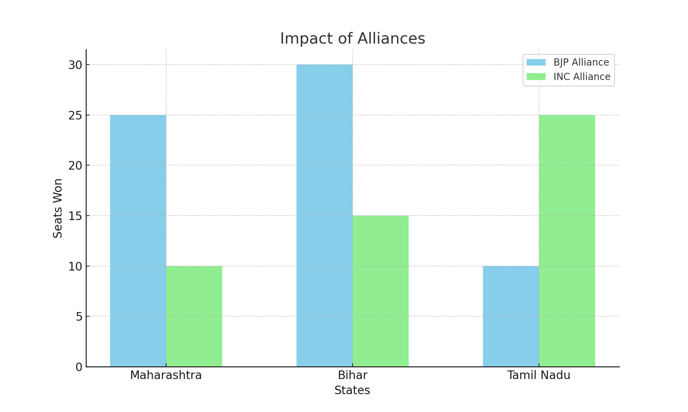

Key Insights
Total Seats Won by Each Party

The Bharatiya Janata Party (BJP) secured a significant number of seats, maintaining its dominance with 303 seats. The Indian National Congress (INC) won 52 seats, showing an improvement from previous elections but still far behind BJP. Regional parties like DMK in Tamil Nadu won 22 seats, indicating strong local support.
Vote Share Percentage by Party

The BJP had a substantial vote share of approximately 37%, reflecting strong nationwide support. The INC followed with a 19% vote share. This disparity in vote share highlights the continued preference for BJP among voters across various states.
Voter Turnout Analysis
Voter turnout varied significantly across states. States like Kerala and West Bengal saw high voter turnouts of over 80%, indicating strong civic engagement. Conversely, states like Bihar and Uttar Pradesh had relatively lower turnouts, around 60%, suggesting potential voter apathy or logistical challenges.
Performance in Key States
In Uttar Pradesh, the BJP dominated with 60 seats, while the Samajwadi Party (SP) managed to secure 10 seats. In West Bengal, the Trinamool Congress (TMC) maintained a stronghold with 34 seats, showcasing its regional influence. These performances underline the significant role of regional dynamics in the overall election outcomes.
Trend Analysis
Comparing the 2024 results with the 2019 elections, the BJP's seat count remained robust, showing consistent voter loyalty. However, the INC's seat count showed a slight improvement, reflecting efforts to regain voter trust. This trend suggests a stable political landscape with slight shifts towards opposition resurgence.
Closely Contested Seats
Several seats were won with very narrow margins. For example, in the Attingal constituency in Kerala, the INC candidate won by just 684 votes over the CPI(M) candidate. Such closely contested seats highlight the competitive nature of the election and the importance of every vote.
Impact of Regional Parties
Regional parties had a substantial impact, particularly in states like Tamil Nadu and West Bengal. The DMK in Tamil Nadu and the TMC in West Bengal secured a significant number of seats, underscoring their strong regional influence and voter base.
Gender-wise Voter Turnout
In states like Kerala and West Bengal, female voter turnout was notably high, often surpassing male turnout. This trend highlights the increasing political engagement of women in these regions, contributing to overall higher voter participation rates.
New vs. Incumbent Candidates

Incumbent candidates had a mixed performance. While many incumbents from the BJP retained their seats, several new candidates from the INC and regional parties also managed to win, indicating a desire for change among certain voter segments.
Impact of Alliances
Alliances played a crucial role in the election outcomes. The BJP's alliance with regional parties in states like Maharashtra and Bihar helped secure additional seats. Conversely, the INC's alliances in states like Tamil Nadu with the DMK proved beneficial, allowing them to increase their seat count.